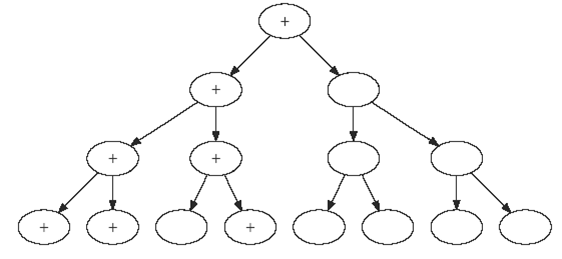
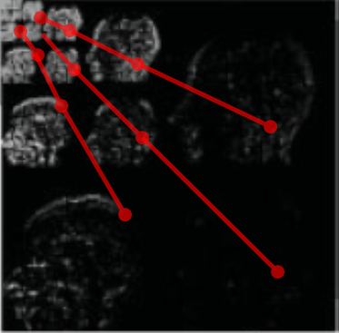
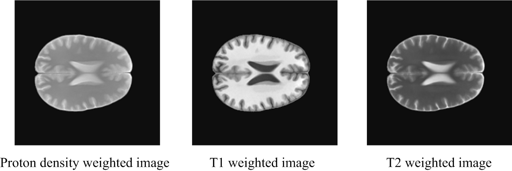
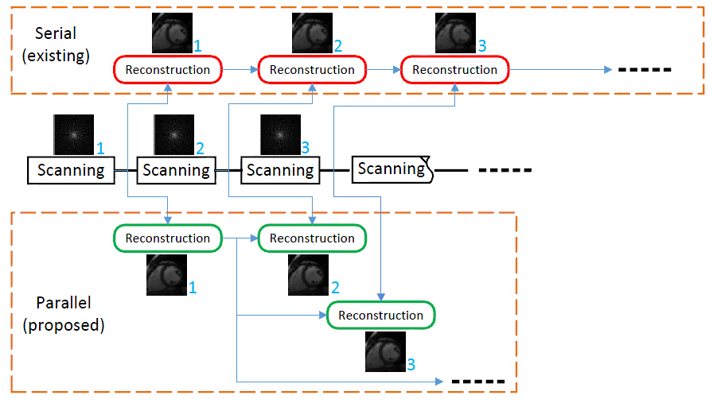
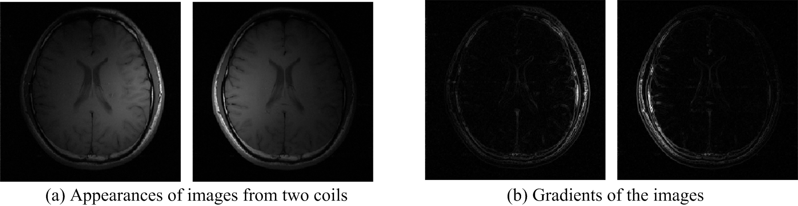

Chen Chen, Yeqing Li, and Junzhou Huang
A toolbox for compressive sensing (CS) magnetic resonance imaging (MRI) with structured sparsity. [MATLAB code]
Compressed sensing (CS) aims to reconstruct signals and images from significantly fewer measurements than were traditionally thought necessary. Magnetic Resonance Imaging (MRI) is an essential medical imaging tool burdened by an inherently slow data acquisition process. The application of CS to MRI has the potential for significant scan time reductions, with benefits for patients and health care. In Compressive Sensing Magnetic Resonance Imaging (CS-MRI), one can reconstruct a MR image with good quality from a small number of measurements. This can significantly reduce MR scanning time. In this work, we propose efficient algorithms to improve CS-MRI based on structured sparsity. According to the structured sparsity theories, the reconstruction quality can be enhanced with the same number of measurements. The results show that our method often outperforms the standard sparsity based approaches on different MRI applications.
The wavelet coefficients of MR images are often approximately sparse. Most coefficients are very close to zeros, while only a small number of them have large values. Many existing methods are designed to exploit the wavelet sparsity of MR images. We further exploit the structure of wavelet coefficients. The wavelet coefficients of MR images naturally form a quadtree structure. A typical relationship in the wavelet tree structure is that, if a parent coefficient has a large/small value, its children also tend to be large/small. A novel algorithm is proposed to reconstruct MR images by utilizing this structure.
 Reference:
[1] Junzhou Huang, Shaoting Zhang, Dimitris Metaxas, "Efficient MR Image Reconstruction for Compressed MR Imaging", Medical Image Analysis, Volume 15, Issue 5, pp. 670-679, October 2011.
[2] Chen Chen, and Junzhou Huang, "The Benefit of Tree Sparsity in Accelerated MRI", Medical Image Analysis, Volume 18, Issue 6, pp. 834–842, 2014.
[3] Chen Chen and Junzhou Huang, "Compressive Sensing MRI with Wavelet Tree Sparsity", the 26th Annual Conference on Neural Information Processing Systems (NIPS), Nevada, USA, 2012.
Multi-contrast MRI is a common technique to aid clinical diagnosis. For example T1 weighted MR images could well distinguish fat from water, with water appearing darker and fat brighter. Whereas in T2 weighted images fat is darker and water is lighter, which is suited to imaging edema. Although with different intensities, T1/T2 or proton-density weighted MR images are scanned at the same anatomical position. This work proposes an efficient algorithm to jointly reconstruct multiple T1/T2-weighted images of the same anatomical cross section from partially sampled k-space data.
Reference:
[4] Junzhou Huang, Chen Chen and Leon Axel, ”Fast Multi-contrast MRI Reconstruction”, Magnetic Resonance Imaging, Volume 32, Issue 10, pp. 1344-1352, 2014.
[5] Junzhou Huang, Chen Chen, and Leon Axel, "Fast Multi-contrast MRI Reconstruction", the Annual International Conference on Medical Image Computing and Computer Assisted Intervention (MICCAI), Nice, France, October 2012.
Dynamic MRI requires to reconstruct a sequence of MR images. Most existing approaches are offline and require that all the data are collected before reconstruction. Online reconstruction means that the reconstruction of one frame only relies on the previous frames but not the later frames. In our scheme, the reconstruction of current frame only depends on the first frame. This could avoid error accumulation in existing online methods. The experimental results show that our method significantly outperforms previous online methods, and is comparable to the offline methods in terms of reconstruction accuracy.
Here are some results:
Reference:
[6] Chen Chen, Yeqing Li, Leon Axel and Junzhou Huang, "Real Time Dynamic MRI with Dynamic Total Variation", the Annual International Conference on Medical Image Computing and Computer Assisted Intervention (MICCAI), 2014.
[7] Chen Chen, Yeqing Li, Leon Axel and Junzhou Huang, "Real Time Dynamic MRI by Exploiting Spatial and Temporal Sparsity with Dynamic Total Variation", Magnetic Resonance Imaging, Volume 34, Issue 4, pp. 473-482, 2016.
To improve the scanning speed of MRI,it is routine to acquire the data in parallel with multi-channel coils. We observe the images of different coils are jointly sparse in the gradient domain. The pMRI problem can be formulated as a joint total variation regularization task. The field of view is finally obtained via a sum of square approach. One of the major advantage of this method is that it does not need any calibration or sensitivity information. Clinic MR applications could benefit from this method even when accurate calibration is limited or not possible at all.
Reference:
[8] Chen Chen, Yeqing Li, and Junzhou Huang, "Calibrationless Parallel MRI with Joint Total Variation Regularization", the Annual International Conference on Medical Image Computing and Computer Assisted Intervention (MICCAI), 2013.